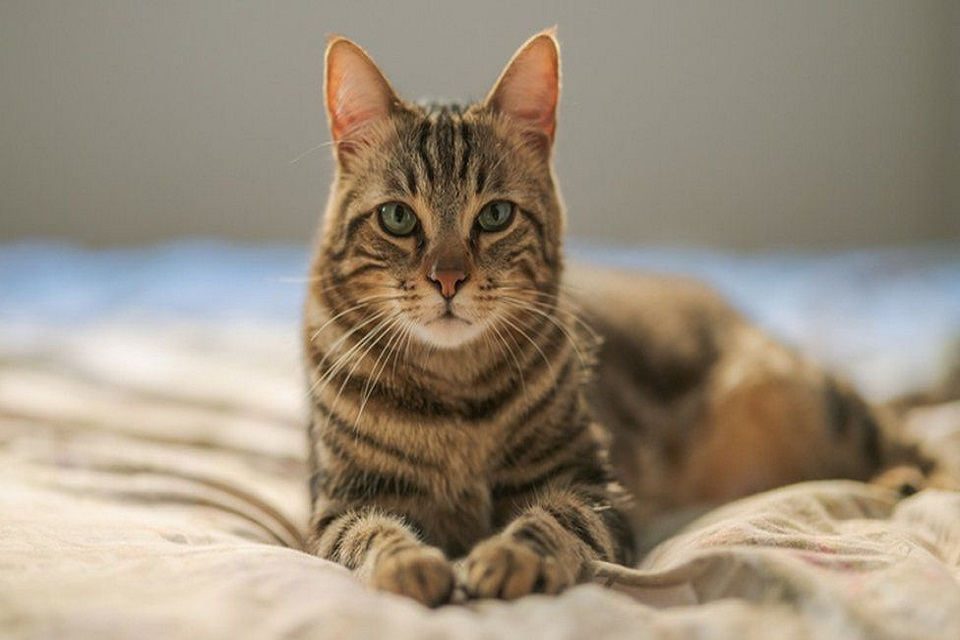
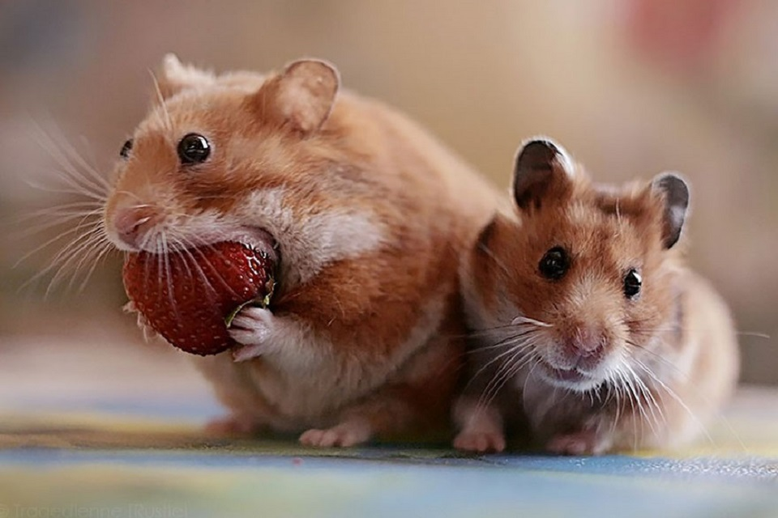

Cats
Like their wild relatives, domestic cats are natural hunters able to stalk prey and pounce with sharp claws and teeth.
They are particularly effective at night, when their light-reflecting eyes allow them to see better than much of their prey.
Cats also enjoy acute hearing. All cats are nimble and agile,
and their long tails aid their outstanding balance.
Learn more

Dogs
When a dog gets a whiff of something new, he sniffs the odor into an amazing smelling machine.
His nose has a special pocket called the olfactory recess that is separated from the rest of his nose by a thin bone.
He can store air in that recess while he continues to breathe in and out normally, which gives his brain more time to interpret the smell
Learn more

Hamsters
In fact, there are 26 species of wild hamster that run free in parts of Europe, Asia, and the Middle East,
including Mesocricetus auratus, the Syrian hamster, which comes from the region surrounding Aleppo, Syria—the city currently under siege amid the Middle Eastern country’s ongoing war.
(Related pictures: “Syrian Cultural Sites Damaged by Conflict.”)
Learn more